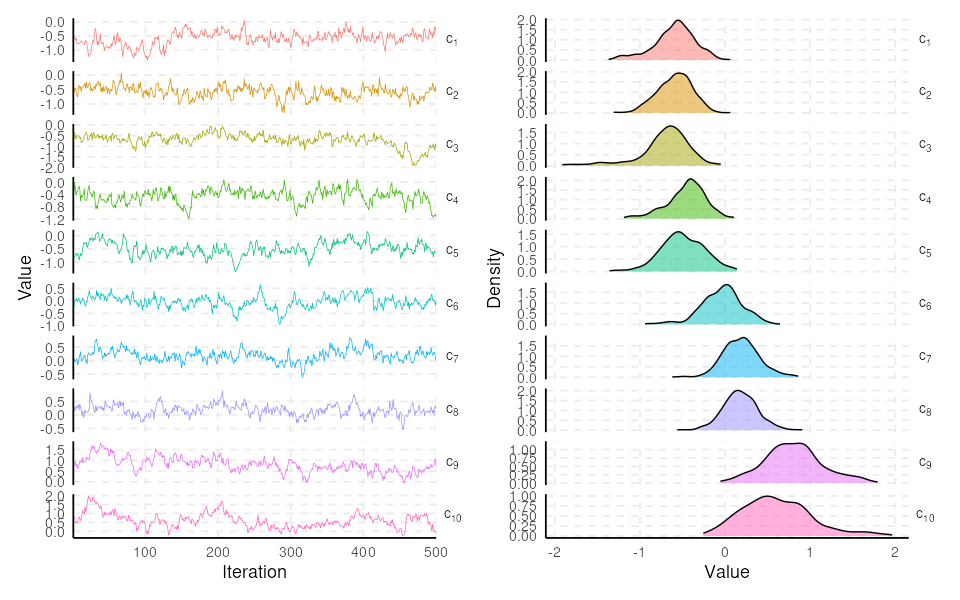

Introduction
spifa fits spatial item factor analysis (IFA) models for binary responses using full Bayesian inference (adaptive Metropolis-Hastings within Gibbs sampling), via auxiliary variables with a probit link function. The latent factors are modelled as the sum of a predictor effect, a multivariate Gaussian process capturing spatial dependence, and a multivariate non-spatial term, so spatially referenced constructs (e.g. food insecurity or a socio-economic index measured at survey locations) can be mapped and predicted at new locations. Standard exploratory and confirmatory IFA are supported as particular cases, simply by dropping the spatial structure.
The package implements the methodology described in “Mapping food insecurity in the Brazilian Amazon using a spatial item factor analysis model” (2025), published in The Annals of Applied Statistics at https://doi.org/10.1214/25-AOAS2072. In addition to the core spatial item factor analysis model, spifa offers tools for model diagnostics, visualization, and summarizing results.
Installation
You can install the development version from GitHub:
remotes::install_github("ErickChacon/spifa")Basic usage
A minimal spatial item factor analysis fit on the bundled ipixuna dataset (a simulated sf object with items responses for geo-referenced households). We define the factor loadings structure (discrimination) and fit the model with the default spatial structure for each factor:
library(spifa)
data(ipixuna)
nfactors <- 3
nitems <- ncol(ipixuna$items)
# define a restriction for the discrimination
A <- matrix(1, nitems, nfactors)
A[c(1, 3, 5), 1] <- 0
A[c(2, 6, 9), 2] <- 0
A[c(4, 7, 10), 3] <- 0
# sampling from the posterior distribution
samples <- spifa(items ~ 1, data = ipixuna, nfactors = nfactors, niter = 1000,
constraints = list(discrimination = A))
# visualize the easiness parameters (c)
plot(samples, select = "c", burnin = 500)
See vignette("spifa-ipixuna") for a full worked example.
Citation
If you use spifa in your work, please cite both the paper that proposes the underlying model and the package itself:
Chacón-Montalván, E. A., Parry, L., Giorgi, E., Torres, P., Orellana, J. D. Y., Moraga, P., and Taylor, B. M. (2025). Mapping food insecurity in the Brazilian Amazon using a spatial item factor analysis model. The Annals of Applied Statistics, 19(4), 3438-3463. https://doi.org/10.1214/25-AOAS2072
citation("spifa")See also
For item factor analysis without spatial structure, see the mirt package.